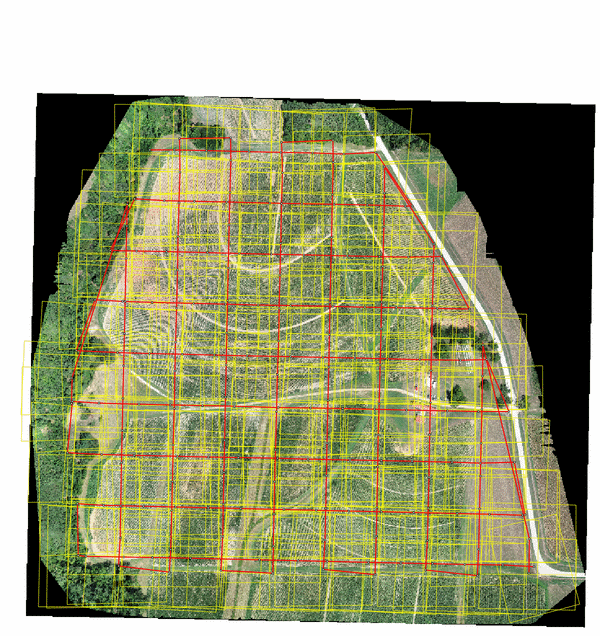
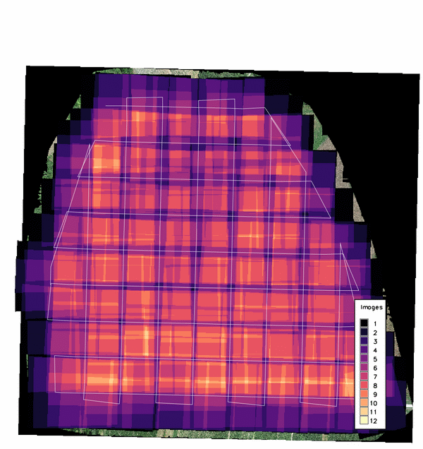

DESCRIPTION
v.photo.geometry recovers acquisition geometry from a directory
of aerial photos whose flight metadata is incomplete. From the image
metadata and an elevation model it derives the camera positions and
orientations, above-ground altitude, ground sample distance (GSD), and
image footprints, and writes them as vector maps:
- footprints: one 3D area per image, ray-traced onto the
elevation model (or projected onto flat ground with -f), with
the full set of per-image attributes.
- stations: 3D points at the camera positions with the same
attributes (yaw, pitch, roll, altitude, AGL, GSD, sensor size, camera
make, model, lens, and body serial number).
- path: one 3D line per camera body and flight segment,
reconstructing the flown track. Curved tracks (typical for manned
sorties) are smoothed with a Catmull-Rom spline; grid patterns
(typical for UAS mapping missions) are kept as straight legs.
- overlap: a per-image forward and side overlap report written
as plain text, CSV, or JSON (format), to a file or to standard
output (
overlap=-).
- overlap_density: a raster counting the number of images that
cover each cell, colored with the magma color table.
At least one of these outputs is required.
The tool was written for imagery that arrives without flight logs, such
as post-disaster reconnaissance photos, where flight planning
parameters have to be reconstructed from the images themselves.

Figure: Recovered image footprints (yellow), camera stations (dots),
and flight path (red) of a 215-image DJI Phantom 4 Pro mission over the
Lake Wheeler field laboratory, NCSU, on the same-day orthomosaic.
NOTES
ExifTool requirement
Image metadata is read with
ExifTool (version 12.0 or newer),
which must be installed separately; g.extension cannot install
it. On Debian/Ubuntu install libimage-exiftool-perl, on
Fedora perl-Image-ExifTool, on macOS
brew install exiftool. JPEG, TIFF, and DNG images are
read, recursively below the input directory.
The Python package pyproj is also required and is not
installed by g.extension: pip install pyproj.
Sensor size
The physical sensor size drives the GSD and footprint scale. It is
resolved in this order:
- the sensor option (width,height in mm), when given;
- the EXIF focal plane resolution tags;
- the 35 mm equivalence scale factor, which ExifTool derives from its
internal camera database when the focal plane tags are absent (the
common case for drones).
The source used is reported per camera model. Estimated values inherit
the precision of the source tags and are commonly a few percent larger
than the true sensor dimensions, which propagates linearly into GSD and
footprint size. When the sensor dimensions are known, pass them with
sensor for exact results. The reported GSD assumes a nadir view;
oblique imagery has a varying scale across the frame.
Orientation and heading
Yaw, pitch, and roll are taken from the maker orientation tags (for
example DJI FlightYawDegree,
GimbalPitchDegree, GimbalRollDegree, or
GPSImgDirection) when present. Without them the camera is
assumed nadir and the heading of each image is estimated from the GPS
track: images are grouped per camera body (serial number), split into
flight segments wherever consecutive exposures are more than
time_gap seconds apart, and the heading is interpolated along
each segment. Multi-camera rigs that fire simultaneously against a
single GPS record are handled by this per-body grouping.
Footprints and the computational region
Footprint corners are ray-traced from the camera through the sensor
corners onto the elevation raster, read once at the current
computational region resolution. The region must cover the photo
block. The GPS altitude and the elevation model must share a vertical
datum; a datum offset shifts the AGL and scales every footprint.
There is no offset option, so adjust the elevation model or the image
altitudes beforehand when the datums differ. DEM cells that are NULL
are treated as holes: corner rays pass through them and footprints
whose corners cannot reach ground are skipped with a warning. With
-f the terrain is ignored and each footprint is a flat rectangle
at the ground elevation below the camera, rotated by yaw only; pitch
and roll are not applied. This is faster but degrades with relief and
off-nadir angles. Overlap statistics and the density
raster treat each footprint as a convex quadrilateral; on very steep
relief the terrain-draped corners can violate that assumption
slightly.
Overlap statistics
Forward overlap is the fraction of an image footprint covered by the
next image of the same camera within the same flight segment. Side
overlap is the maximum overlap with any non-consecutive image of the
same camera, which captures adjacent flight lines without
reconstructing the line layout. Images without a footprint report
empty values.
The overlap_density raster counts the images covering each cell
of the current computational region, computed from the footprint
polygons in memory. Cells covered by no image are NULL. The magma
color table is applied to the output.

Figure: Overlap density of the same mission; the double-grid
crosshatch peaks at 12 images per cell.
Footprints of adjacent images overlap by design, so the
footprints map contains overlapping areas; GRASS reports
duplicate centroids when building its topology, which is expected
here.
EXAMPLES
Recover the full geometry of a photo block:
g.region raster=dtm -p
v.photo.geometry input=/data/mission01 elevation=dtm \
footprints=m01_footprints stations=m01_stations \
path=m01_path overlap=m01_overlap.csv \
overlap_density=m01_density
v.photo.geometry -f input=/data/mission01 elevation=dtm \
sensor=36.0,24.0 overlap=- format=plain
SEE ALSO
g.region,
i.ortho.photo,
v.info
REFERENCES
- ExifTool, Phil Harvey
- ExifTool EXIF
tag names
- White, C.T., Regmi, P., Reckling, W., Mitasova, H. (2026).
Volumetric Change Detection with SfM Photogrammetry from Rapid-Response
Aerial Imagery after Hurricane Helene. Remote Sensing
(in review). The tool's camera-geometry recovery was developed for the
flight diagnostics in this study.
AUTHORS
Corey T. White,
NCSU GeoForAll Lab
{kind=link}
{kind=link}